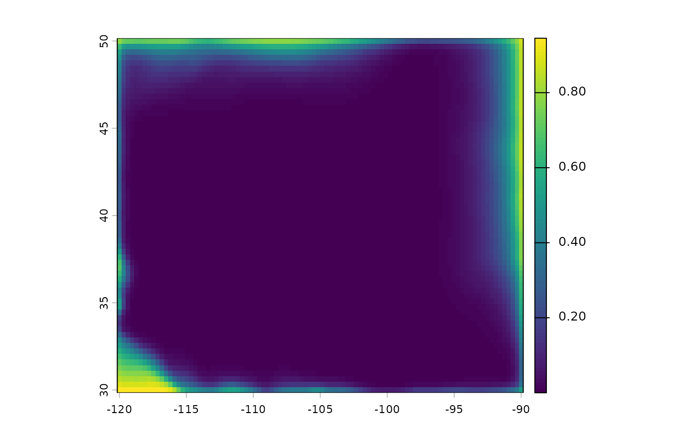
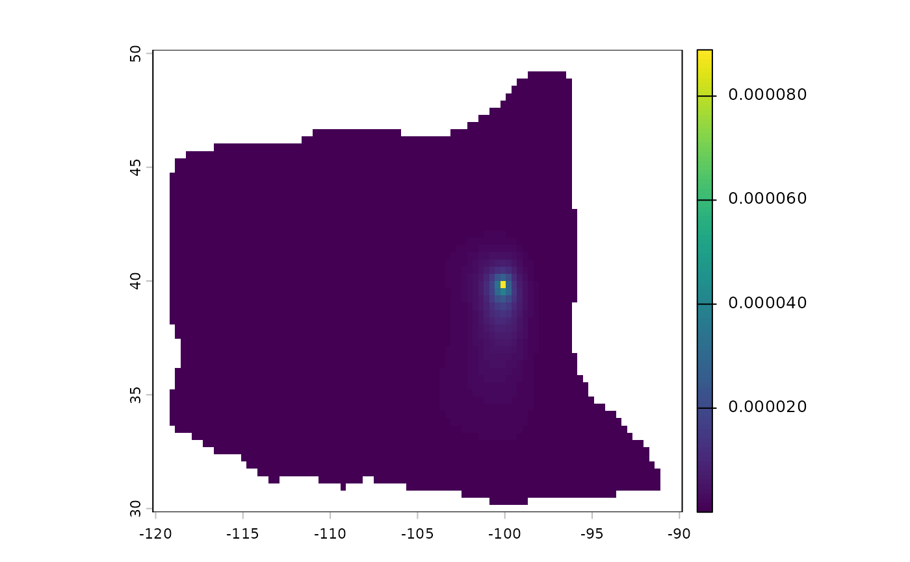

Probability of exiting a random walk's domain
rw_exit_prob.RdComputes, for each grid cell, the probability that particles released there leave the domain
before being deposited: across its edges, into NA cells, or either. Because mass that leaves
the domain is lost (see the Domain edges section of random_walk()), this measures how much
each cell's results are affected by the choice of domain. See Details for how to use it.
Usage
rw_exit_prob(
rose,
half_life = Inf,
exits = c("all", "edges", "na"),
latitude_correction = TRUE,
iter = NULL,
timescale = 1
)Arguments
- rose
A
wind_rose.- half_life
Half-life of airborne mass, in hours. Should match the value used for the random walk being assessed; see
random_walk(). With the defaultInf, every cell with a path to an exit has exit probability 1 (in the long run, all mass leaves), so the result is informative only withiteror for comparingexits = "edges"with"na".- exits
Which exits to count.
"all"(the default) counts mass leaving across domain edges or into NA cells, matching the edge-loss fraction reported byrandom_walk()."edges"counts only mass leaving across the outer edges of the grid, and"na"only mass entering NA cells, e.g. to separate truncation of the domain from loss to a deliberately masked area. Both kinds of exit remain absorbing in every case:"edges"and"na"give the probability that mass is lost by that route, and they sum to"all".- latitude_correction
Logical. Should match the value used for the random walk being assessed; see
random_walk().- iter
Number of pulse-mode iterations (time steps) over which to count exits. The default
NULLgives the probability of ever exiting, which applies to stream-mode results and does not depend ontimescale. An integer gives the probability of exiting withinitersteps, which applies to pulse-mode results at that iteration.- timescale
With
iteronly: time step scaling factor; seerandom_walk(). Should match the value used for the pulse-mode walk.
Value
A single-layer SpatRaster named exit_prob, giving for each cell the probability that
a particle released there exits by the routes in exits (within iter steps, if given)
before being deposited. NA where rose is NA. Cells from which no exit can be reached
have probability 0.
Details
Interpreting exit probabilities as error bounds
Consider a random walk on a larger domain that contains this one, with any winds outside it.
A particle released at cell x follows the same process in both domains until it first
exits this one, so results for particles released at x can differ between the two only
through particles that exit. This makes the exit probability h(x) a bound on the effect of
the domain boundary, with no assumptions about winds outside the domain, for any quantity
that is a probability over particles released at x:
For an upwind walk (
direction = "upwind"), stream-modedepositionatx(the probability that a particle released atxis deposited at the receptor) is off by at mosth(x). The same holds for pulse-modeairborneanddepositionat iterationiter, usinghcomputed with thatiter.For
pairwise_random_walk(), values for sourcexare off by at mosth(x).For a downwind walk from a unit source at
x, the deposition map is off by at mosth(x)in total, summed over all cells (withdensity = FALSE). This bounds the map as a whole, not the error at any particular cell. For a downwind walk with several sources, the edge-loss fraction reported byrandom_walk()ishaveraged over sources, weighted by release.
Masking cells where h exceeds a tolerance therefore leaves cells whose values are accurate
to within that tolerance. The bound is conservative, since it counts every particle that
exits as fully misplaced, whereas some would return. It does not cover the error at
individual cells of downwind maps, which comes from particles that exit and later return, nor
the absence of sources beyond the domain in results that assume release everywhere (such
as upwind origin with the default source); bounding these requires assumptions about
the winds and sources outside the domain.
Exit probabilities are typically highest near the domain's downwind margins, where released
mass is carried out of the domain, and fall off quickly toward upwind margins. The width of
the affected band grows with half_life.
Computation
Exit probabilities solve (I - (1 - lambda) P) h = (1 - lambda) l, where P is the
transition matrix, lambda the per-step deposition fraction, and l the per-step
probability of stepping out of the domain by the routes in exits. This is one sparse
solve, the same size as a stream-mode walk. With iter, the recursion
h <- (1 - lambda) * (l + P h) is applied iter times from h = 0.
Examples
# \donttest{
rose <- windscape_example("wind_rose")
h <- rw_exit_prob(rose, half_life = 24)
plot(h)

# mask an upwind walk to cells where the domain affects results by less than 1%
rw <- random_walk(rose, cbind(-100, 40), mode = "stream", direction = "upwind",
half_life = 24)
#> iteration timestep: ~0.935
#> decay per step (lambda): ~0.0263
#> (timestep and half_life are in hours IF trans == 1 and wind_field units are m/s)
plot(terra::mask(rw$deposition, h > 0.01, maskvalues = TRUE))

# }